BATCH revolutionizes post-production for film & television through its patent-protected batch processing technology that can create mattes for an entire film in hours instead of months. Created by and for filmmakers, BATCH allows more time in color & vfx sessions for creative artistry. BATCH came to us to help with naming, branding, their demo video and website. We took inspiration from both the visual worlds of film & cinema and the concept of batch processing. The custom bold blocked logo is reminiscent of a matte created for film.
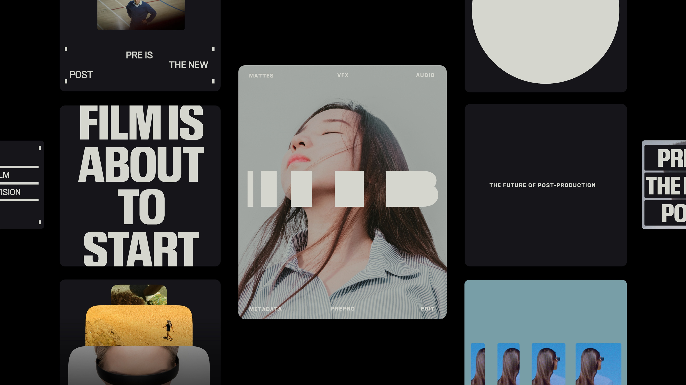
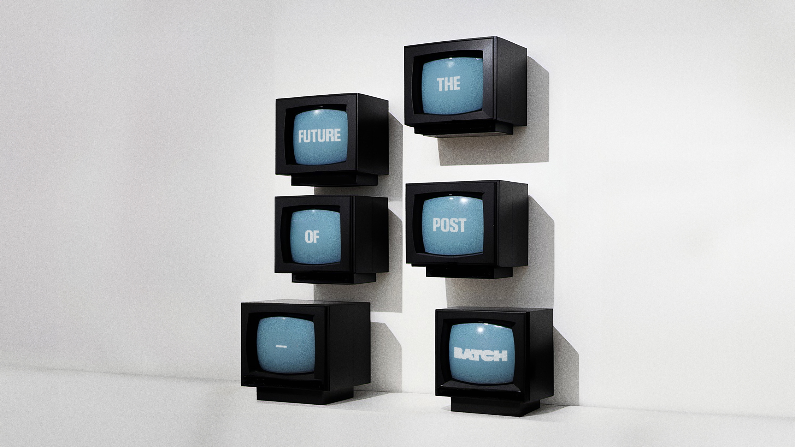
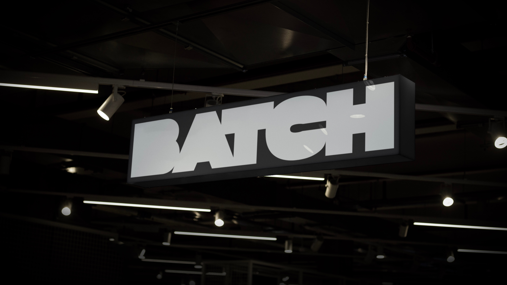
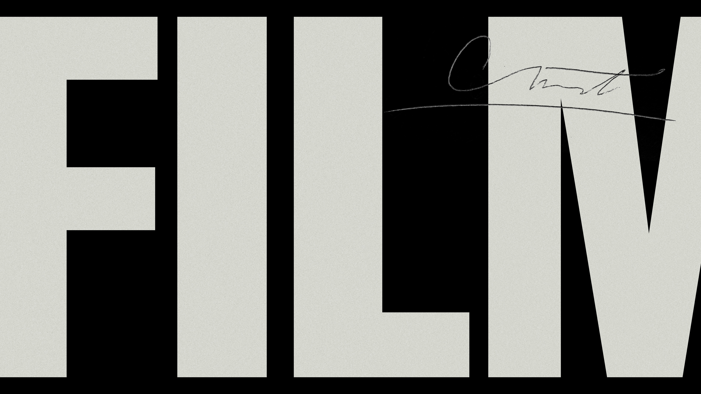

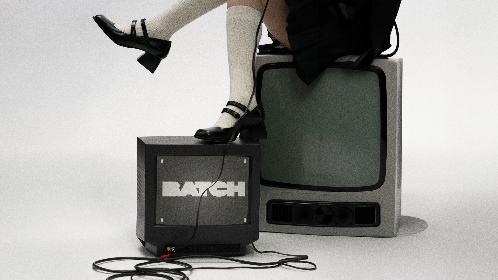
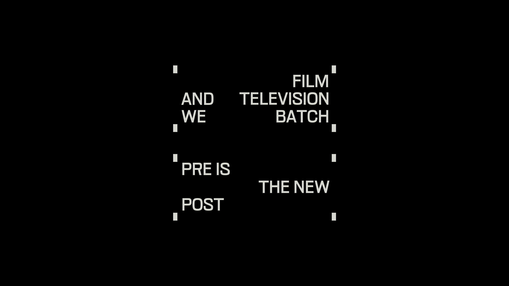
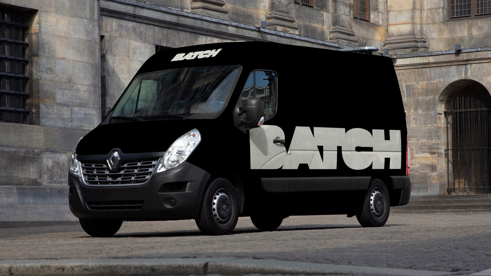

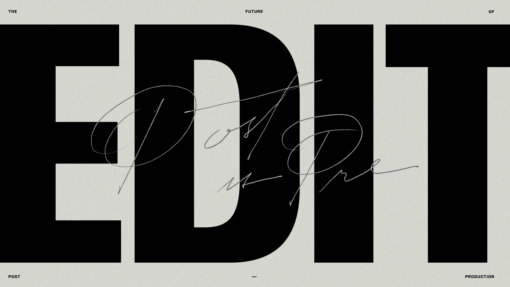
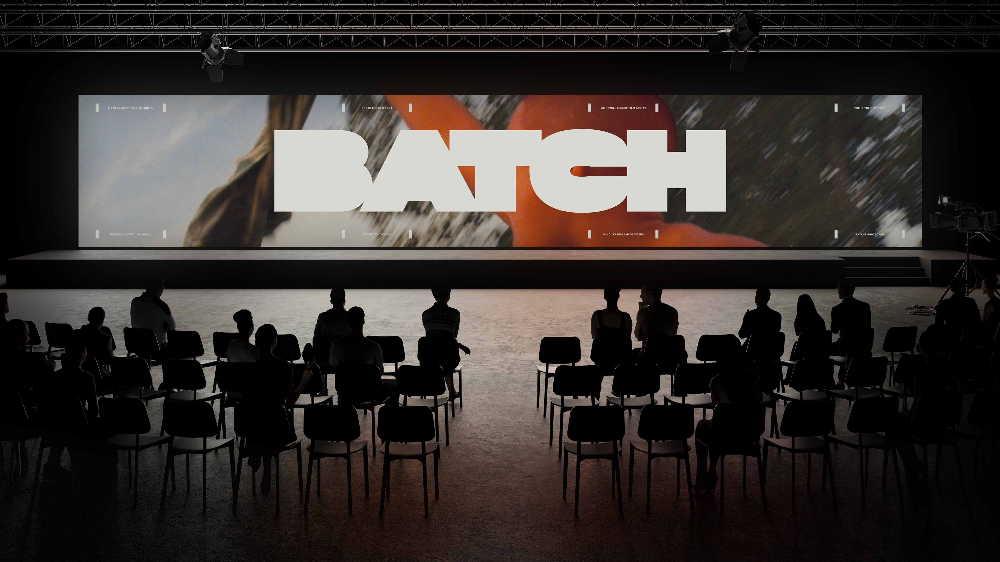

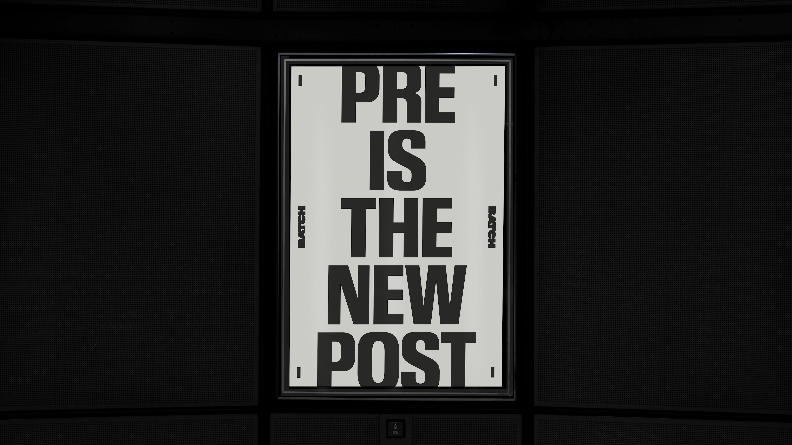

A full-scale branding project for World Ocean Celebration, designed to create a lasting visual identity for an event that blends conservation, art, science, and activism. From logo design to a flexible design system, we developed an identity that could evolve with the organization—spanning everything from pitch decks to event signage, social media, and future activations. Our work helped World Ocean Celebration Miami to mount a successful sponsorship campaign between 2024 and 2025, allowing them to expand from a single day event to a weeklong celebration.
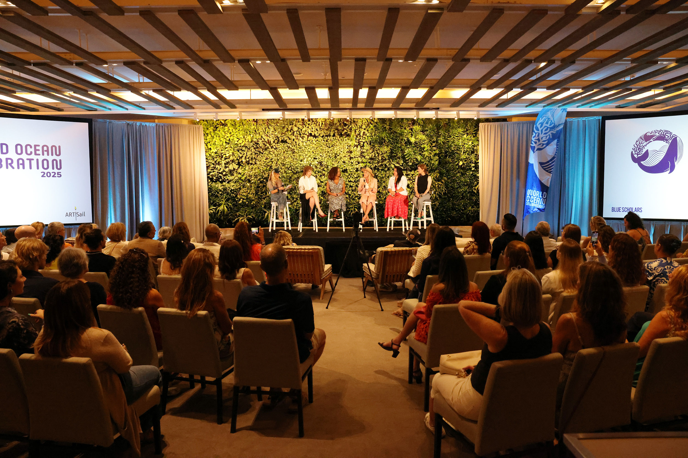
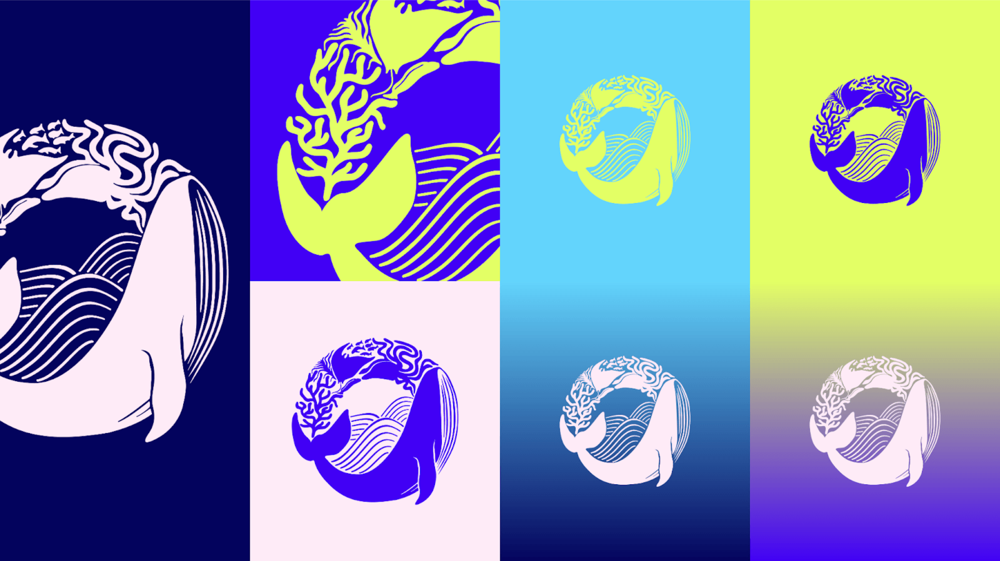
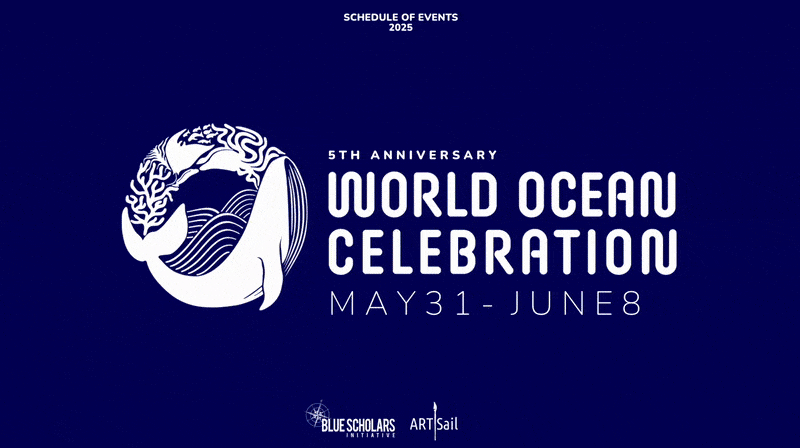

Type of Feeling is a type foundry specializing in creating bespoke typefaces tailored for brands seeking to convey their unique identities through typography. This passion project was created by the &Walsh studio. The foundry offers a curated retail collection alongside custom typography services, each inspired by a diverse range of emotions. By translating feelings into typographic forms, we help brands communicate on a more profound, emotional level with their audiences.
While I joined the team post-launch, I oversaw the production and launch of 6 new typefaces, including the Meraki Full Family, Rauha, Fiero, Yūgen, Bonté, and Gravitas.
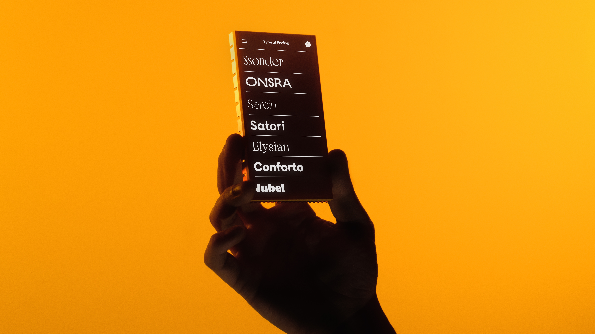
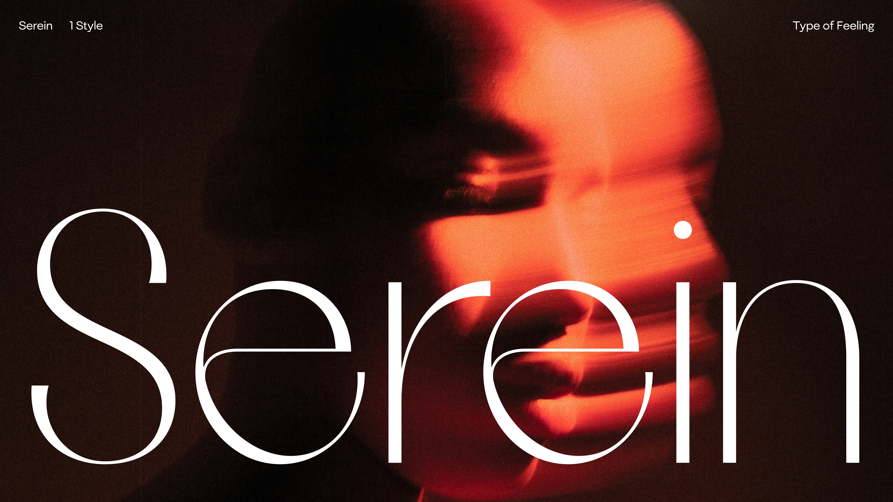


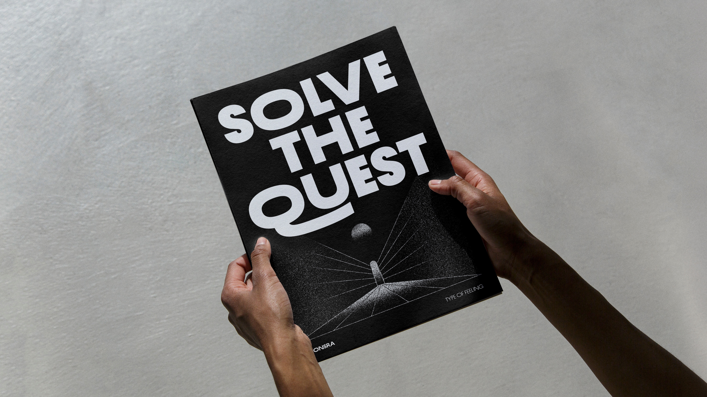


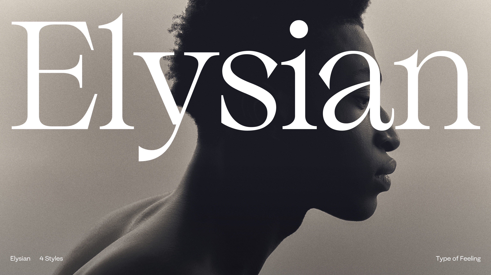


For full client list please send me an email at jackctrego@gmail.com.